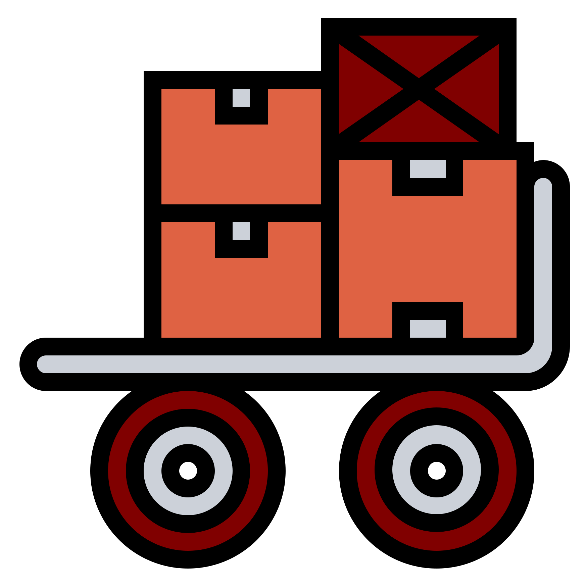

<ion-header>
  <ion-toolbar color="primary" mode="ios">
    <ion-buttons slot="start">
      <ion-button (click)="settings()">
        <ion-icon name="settings" slot="icon-only"></ion-icon>
      </ion-button>
    </ion-buttons>
    <ion-title>Keeper</ion-title>
    <ion-buttons slot="end">
      <ion-button (click)="logout()">
        <ion-icon name="log-out" slot="icon-only"></ion-icon>
      </ion-button>
    </ion-buttons>
  </ion-toolbar>
</ion-header>

<ion-content fullscreen class="vertical-center" *ngIf="(userService.user$ | async) as user">
  <div>
      <ion-grid *ngIf="dataPrint">
        <ion-row *ngIf="user.access.includes('packer')">
          <ion-col size="6">
              <ion-card class="" routerLink="/barang-keluar">
                
                <ion-card-header>
                  <ion-card-subtitle>Scan Barang Keluar</ion-card-subtitle>
                  <ion-card-title><strong>KIRIM</strong></ion-card-title>
                </ion-card-header>
              </ion-card>
          </ion-col>
          <ion-col size="6">
              <ion-card class=""  routerLink="/resi">
                
                <ion-card-header>
                  <ion-card-subtitle>Pembayaran Keep</ion-card-subtitle>
                  <ion-card-title><strong>ADMIN</strong></ion-card-title>
                </ion-card-header>
              </ion-card>
          </ion-col>
        </ion-row>
        <ion-row *ngIf="user.access.includes('keeper')">
          <ion-col>
              <ion-card class="" routerLink="/barang-masuk">
                
                <ion-card-header>
                  <ion-card-subtitle>Scan Barang Masuk</ion-card-subtitle>
                  <ion-card-title><strong>DATANG</strong></ion-card-title>
                </ion-card-header>
              </ion-card>
          </ion-col>
          <ion-col>
              <ion-card [class]="dataPrint?.length>0?'danger':''" routerLink="/list-ambilan">
                <ion-badge [color]="dataPrint?.length>0?'danger':'primary'" *ngIf="dataPrint">{{dataPrint?.length}}</ion-badge>
                
                <ion-card-header>
                  <ion-card-subtitle>Daftar List Ambilan</ion-card-subtitle>
                  <ion-card-title><strong>LIST</strong></ion-card-title>
                </ion-card-header>
              </ion-card>
          </ion-col>
        </ion-row>
      </ion-grid>
  </div>
</ion-content>

<ion-footer>
  <ion-toolbar class="ion-text-center" color="primary" mode="ios">
    <ion-text>Keeper Agent v{{appVersion}}</ion-text>
  </ion-toolbar>
</ion-footer>